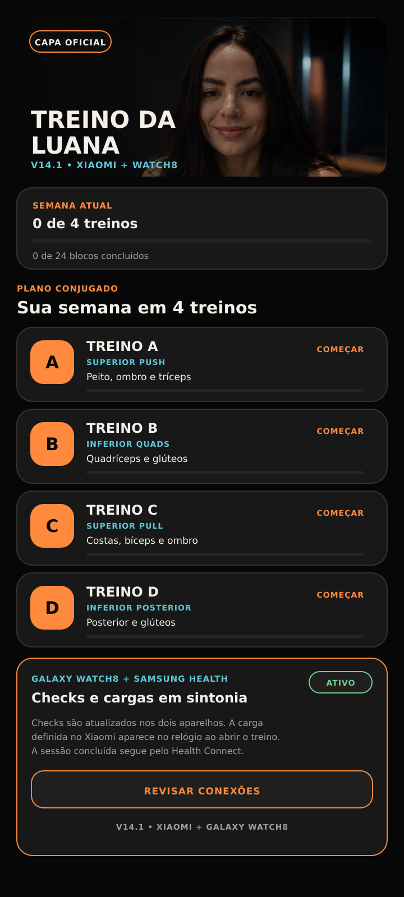
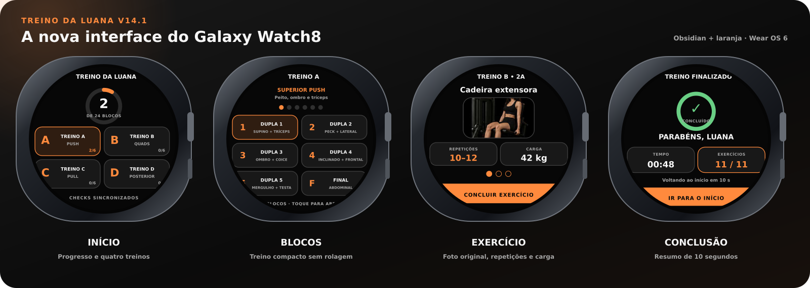

Treino da Luana V14.1
Um treino que cabe no bolso e continua no pulso.
Quatro treinos conjugados, fotos offline, progresso semanal, registro de cargas e uma experiência independente no Galaxy Watch8. A proposta é simples: abrir, treinar, marcar e seguir.
Interface principalPremium Obsidian

O que resolveuso real
Menos tempo procurando exercício. Mais tempo fazendo o treino.
01
Fotos incorporadas ao aplicativo para funcionar sem internet.
02
Duplas A e B na mesma lógica visual, com descanso só depois das duas.
03
Progresso semanal e marcação de blocos para continuar de onde parou.
04
Integração opcional com Health Connect sem leitura de dados de saúde.
01 · O aplicativo
Construído para ser usado durante o treino, não para virar mais uma tarefa.
A V14.1 organiza a semana em quatro treinos conjugados e mantém tudo necessário dentro do aplicativo: imagens, séries, repetições, carga, descanso, check in e progresso.
44 fotos dentro do APK.
As imagens dos exercícios não dependem de conexão durante a academia.
5 duplas e 1 finalizador.
Cada treino segue a mesma lógica para diminuir fricção e acelerar a execução.
Semana visível.
O aplicativo registra os blocos concluídos e mostra quantos dos quatro treinos foram feitos.
Sem servidor próprio.
O registro de treino no Health Connect é opcional e o aplicativo não lê dados de saúde.
Fluxo principaldurante a sessão
Escolher treino
→Executar A
→Executar B
→Descansar
→Marcar bloco
→Finalizar
02 · Os treinos
Quatro sessões. A mesma lógica. Foco diferente.
Escolha um treino para abrir as duplas, repetições e o finalizador exatamente como estão estruturados na V14.1.
03 · Experiência
A interface acompanha o treino em vez de competir com ele.
A lógica da V14.1 é feita para reduzir decisões repetidas: a ordem está pronta, as imagens ficam juntas, cada bloco pode ser marcado e o descanso acontece depois da dupla.
SimulaçãoDupla 1
+
DESCANSO60segundos
Princípios de UXV14.1
Voltar precisa ser fácil.
A navegação mantém a sessão simples e previsível.
Carga fica no contexto.
O valor acompanha o exercício e pode evoluir com o progresso.
Imagem antes da dúvida.
A execução pode ser conferida sem sair do aplicativo.
Estado local.
Check ins e progresso continuam disponíveis sem depender de backend.
04 · Integrações
O aplicativo escreve o treino. Não lê sua vida inteira.
A V14.1 usa Health Connect apenas para registrar uma sessão de treino de força concluída. O Samsung Health pode receber essa atividade quando autorizado.
XiaomiSimboratreino concluído
WRITE_EXERCISE→
AndroidHealth Connectregistro de exercício
importação autorizada→
Samsung HealthAtividadeaparece no histórico
WRITE_EXERCISE
Permissão para gravar a sessão de treino concluída.
Leitura de saúde
O aplicativo não precisa consultar outros dados de saúde para funcionar.
Servidor próprio
As informações do treino não são enviadas para uma infraestrutura própria do projeto.
05 · Galaxy Watch8
O relógio não é uma notificação do celular. É uma versão própria do treino.
O módulo Wear OS 6 mostra os quatro treinos, fotos originais, repetições, carga sincronizada, progresso circular e o resumo final no Galaxy Watch8.

IndependenteWear OS 6
Foto, carga e check in no pulso.
A V14.1 sincroniza checks nos dois sentidos e recebe automaticamente as cargas cadastradas no Xiaomi.
4treinos
5duplas por treino
1finalizador
06 · Evolução
O aplicativo foi ficando menos experimental e mais usável a cada versão.
A linha do tempo abaixo resume as versões recentes que estão registradas no histórico do repositório.
Fotos individuais
Entrada das imagens de exercício como parte da experiência.
Visual premium e progresso semanal
A interface ganha linguagem Obsidian e acompanhamento da semana.
Experimento de notificações para Withings
Versão validada e preservada no histórico.
Android + Watch8 + Health Connect
Quatro treinos conjugados, 44 fotos offline e Wear OS independente.
Sincronização de checks
Progresso compartilhado entre o Xiaomi e o Galaxy Watch8.
Nova interface e cargas sincronizadas
Fotos no relógio, progresso circular, resumo final e correção de compatibilidade no Xiaomi.
07 · Arquitetura
Dois aplicativos, uma mesma versão de treino.
O projeto V14.1 possui um módulo Android para o Xiaomi e um módulo Wear para o Galaxy Watch8. Os dois usam o Wear OS Data Layer para sincronizar o treino.
Experiência
Android AppXiaomi
Wear AppGalaxy Watch8
Domínio
WorkoutData4 treinos · 44 exercícios
Estado localcheck ins · progresso · cargas
Integração
HealthConnectBridgeWRITE_EXERCISE
Wear OS Data Layerchecks e cargas
Build
Android SDK 36target 35
Java 17Gradle 8.11.1
Build V14.1
ver código da V14.1
gradle :app:assembleDebug :wear:assembleDebug